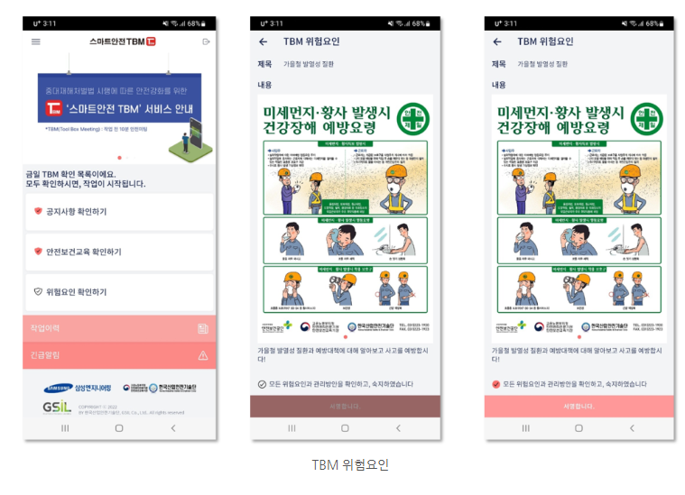

김현수 · 인천 3센터 · 피킹 A조
TODAY 위험성평가
피크데이 주의
출고량 +60%, 피킹/출고 구역 혼잡 예상
높음
R* 17
공지사항
09:15 갱신외부 교육사이트 이동
법정 정기 안전보건교육
실서비스에서는 사내 LMS 또는 외부 교육 플랫폼으로 연결됩니다.
QR 참석 후 TBM 체크
08:20
피킹 A조 집결
피크데이 혼잡 동선 관리
- 정지선과 지정 경로 준수
- 고중량 화물 무리 작업 금지
- 스캔 오류·바닥 이상 즉시 보고
참석 현황
18 / 24명
관리자 TBM QR
현장에서 QR을 스캔하면 참석자로 등록되고, 관리자가 확정한 TBM 교육시간이 일괄 적용됩니다.
관리자 시작
08:20
교육 적용시간
종료 후 확정
근로자는 체크와 문항을 제출하고, 교육시간은 관리자가 TBM 종료를 누르면 QR 참석 인원에게 동일하게 반영됩니다.
관리자 업로드 자료
이미지 · 영상
피킹 2구역 결빙 주의 영상 00:38
TBM 고정 건강체크
필수오늘 작업 전 몸 상태는 어떤가요?
참여 서명
필수위 TBM에 참여하고 내용을 숙지했습니다. 손가락 또는 마우스로 서명하세요.
여기에 서명
서명 대기
공정별 위험도
기본위험도
중간
WMS 보정계수
1.42
동적위험도
높음
파렛트 균형·결속 확인, 도크 대기선 준수
지게차 접근 시 정지, 유도자 수신호 확인
역주행 금지, AGV 경고라인 안쪽 이동 금지
무리한 고중량 취급 금지, 바닥 이상 즉시 신고
램프 구간 저속 이동, 차량 협착 주의
위험요인 신고
법정문서와 비상대응
안전활동과 건강관리
TBM 활동이력
이번 달 TBM
18회
교육(예정)
2/3
제안/신고
4건
피크데이 혼잡 동선 관리 · 활동시간 07:42
피킹/출고 위험도 높음 공지 숙지
출고 램프 인근 누수 신고 · 처리중
물류센터 지게차 접촉재해 예방교육 · 05.10까지
연간 기본 문진 샘플
TBM 시작 전 고정문항 · 피로도 보통 · 특이사항 없음
제출 완료 · 관리자 확인 대기
김현수
인천 3센터 · 피킹 A조
관리자 즉시 신고
상황을 빠르게 선택하면 현장 관리자에게 즉시 알림이 전송되는 흐름입니다.